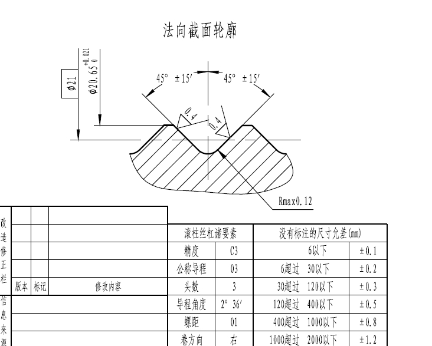

三角
典型齿型图纸：

三角齿型参数详解
此工具用于生成标准三角齿型的DXF文件。各参数说明如下：
1. 工件小径
- 定义：齿型最小直径，即三角齿底部的直径。
- 用途：决定齿根的最小尺寸，影响齿型的整体高度。
2. 工件中径
- 定义：齿型的中间直径，通常为齿高的一半位置的直径。
- 用途：用于齿型计算的基准直径，常用于螺纹等中性线计算。
3. 工件大径
- 定义：齿型最大直径，即三角齿顶部的直径。
- 用途：决定齿顶的最大尺寸，影响齿型的外轮廓。
4. 工件螺距
- 定义：相邻两齿同侧对应点之间的轴向距离。
- 用途：决定齿的密度和分布，影响啮合精度。
5. 右半角
- 定义：齿型右侧与中轴线的夹角（单位：度）。
- 用途：影响齿型的斜度和受力方向，常见标准为30°、45°等。
6. 右半角修正
- 定义：对右半角的微调修正值（单位：度）。
- 用途：用于补偿加工或设计误差，输入正负值均可。
7. 左半角
- 定义：齿型左侧与中轴线的夹角（单位：度）。
- 用途：与右半角类似，影响齿型对称性和受力。
8. 左半角修正
- 定义：对左半角的微调修正值（单位：度）。
- 用途：用于补偿加工或设计误差，输入正负值均可。
9. 保存文件
- 定义：生成的DXF文件保存路径。
- 用途：指定文件保存位置，便于后续查找和使用。
操作说明
- 按照实际需求填写各参数。
- 点击"选择文件"可自定义保存路径。
- 填写完成后，点击"生成齿形文件"按钮，即可生成对应的DXF文件。
如需进一步了解每个参数的工程意义或标准推荐值，请参考相关机械设计手册或齿轮设计标准。